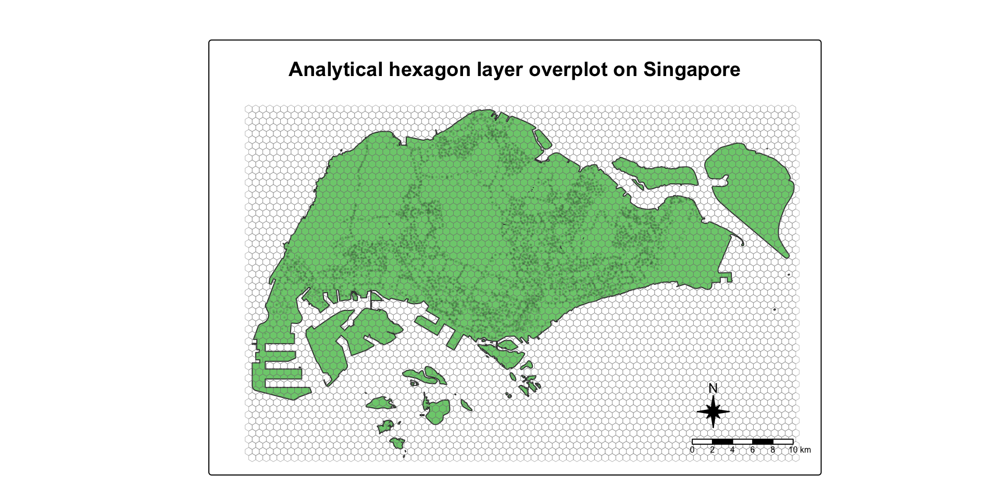

pacman::p_load(
tidyverse,
sf,
sfdep,
tmap,
knitr,
kableExtra,
DT
) In-class Ex06: Take-home Exercise 2 Kick Starter
1 Loading the R package
Write a code chunk to install and load tidyverse, sf, sfdep, tmap, knitr, kableExtra, and DT into R environment.
Note
- tidyverse, a family of modern R packages specially developed for performing data science tasks,
- sf, a modern R package specially developed for performing geospatial data science tasks except visualising geospatial data;
- tmap, an R package for create elegant thematic maps based on the principles of Layered Grammar of Graphics;
- knitr, an R package that provide an elegant, flexible, and fast static table generation with R;
- kableExtra, an extension of knitr for creating elegant html table with R; and
- DT, an R package DT provides an R interface to the JavaScript library DataTables for create interactive htnl tables.
2 Importing data
Write code chunks to perform the followings:
- Importing Bus Stop Location shapefile downloaded from LTA DataMall into R environment.
- Importing Master Plan 2019 Subzone Boundary (No Sea) from Singapore’s open data portal.
- Importing Passenger Volume by Origin Destination Bus Stops downloaded from LTA DataMall into R environment.
2.1 Importing Bus Stop Location
BusStop = st_read(dsn = "/Users/cktan/Desktop/SMU/01_Geospatial Analytics (ISSS626)/Hands-on_Ex/In-Class_Ex06/data/geospatial",
layer = "BusStop") %>%
st_transform(crs = 3414)Reading layer `BusStop' from data source
`/Users/cktan/Desktop/SMU/01_Geospatial Analytics (ISSS626)/Hands-on_Ex/In-Class_Ex06/data/geospatial'
using driver `ESRI Shapefile'
Simple feature collection with 5172 features and 2 fields
Geometry type: POINT
Dimension: XY
Bounding box: xmin: 3970.122 ymin: 26482.1 xmax: 48285.52 ymax: 52983.82
Projected CRS: SVY212.2 Importing Importing Master Plan 2019 Subzone Boundary (No Sea)
# Read the subzone boundary KML into an sf object named 'mpsz_sf'
mpsz <- sf::st_read("data/geospatial/MasterPlan2019SubzoneBoundaryNoSeaKML.kml") %>%
sf::st_zm(drop = TRUE, what = "ZM") %>% # remove Z (elevation) and M (measure) dimensions to keep 2D only
sf::st_transform(crs = 3414) Reading layer `URA_MP19_SUBZONE_NO_SEA_PL' from data source
`/Users/cktan/Desktop/SMU/01_Geospatial Analytics (ISSS626)/Hands-on_Ex/In-Class_Ex06/data/geospatial/MasterPlan2019SubzoneBoundaryNoSeaKML.kml'
using driver `KML'
Simple feature collection with 332 features and 2 fields
Geometry type: MULTIPOLYGON
Dimension: XY, XYZ
Bounding box: xmin: 103.6057 ymin: 1.158699 xmax: 104.0885 ymax: 1.470775
z_range: zmin: 0 zmax: 0
Geodetic CRS: WGS 84
Note
Refer to 2.3.2 Importing Geospatial Data into R of R for Geospatial Data Science and Analytics to learn how to import and tidy a kml file.
2.3 Importing Passenger Volume by Origin Destination Bus Stops
odbus <- read_csv("data/origin_destination_bus_202508.csv")Rows: 5876969 Columns: 7
── Column specification ────────────────────────────────────────────────────────
Delimiter: ","
chr (5): YEAR_MONTH, DAY_TYPE, PT_TYPE, ORIGIN_PT_CODE, DESTINATION_PT_CODE
dbl (2): TIME_PER_HOUR, TOTAL_TRIPS
ℹ Use `spec()` to retrieve the full column specification for this data.
ℹ Specify the column types or set `show_col_types = FALSE` to quiet this message.
Note
read_csv() of readr package should be used instead of read.csv() of of Base R. read_csv() is written in C++, optimized for performance. On the other hands, read.csv() is pure R, much slower for large files. Besides that, read_csv() automatically infers column types (numeric, character, date, etc.) more accurately. In comparison, read.csv() often converts strings to factors by default, which can lead to subtle bugs.
3 Visualising the geospatial data
Below is the code chunk that is used to visualise the bus stops within Singapore.
tmap_mode("plot") # use "view" for interactiveℹ tmap mode set to "plot".tm_shape(mpsz) +
tm_polygons(col = "grey95", border.col = "darkgrey") +
tm_shape(BusStop) +
tm_dots(col = "red", size = 0.1, alpha = 0.6) +
tm_layout(
title = "Bus Stop Locations within Singapore Subzones",
title.position = c("bottom","right"),
title.size = 0.8,
frame = TRUE,
legend.outside = TRUE
)
── tmap v3 code detected ───────────────────────────────────────────────────────
[v3->v4] `tm_polygons()`: use 'fill' for the fill color of polygons/symbols
(instead of 'col'), and 'col' for the outlines (instead of 'border.col').[v3->v4] `tm_dots()`: use `fill_alpha` instead of `alpha`.[v3->v4] `tm_layout()`: use `tm_title()` instead of `tm_layout(title = )`
However, figure above reveals that there a several bus stops (i.e black dots appear at the upper left) located outside of the main Singapore boundary.
3.1 Extracting Bus Stops located within Singapore
# If BusStop has Z/M dims, drop them (harmless if not)
BusStop <- st_zm(BusStop, drop = TRUE, what = "ZM")
# Now do the spatial join: keep only bus stops that fall inside Singapore subzones
BusStop_in_SG <- st_join(
BusStop, mpsz,
join = st_within,
left = FALSE
)Now, plot the bus stops within Singapore.
tmap_mode("plot") # use "view" for interactiveℹ tmap mode set to "plot".tm_shape(mpsz) +
tm_polygons(col = "grey95", border.col = "darkgrey") +
tm_shape(BusStop_in_SG) +
tm_dots(col = "red", size = 0.1, alpha = 0.6) +
tm_layout(
title = "Bus Stop Locations within Singapore Subzones",
title.position = c("bottom","right"),
title.size = 0.6,
frame = TRUE,
legend.outside = TRUE
)
── tmap v3 code detected ───────────────────────────────────────────────────────
[v3->v4] `tm_dots()`: use `fill_alpha` instead of `alpha`.[v3->v4] `tm_layout()`: use `tm_title()` instead of `tm_layout(title = )`
4 Analytical Hexagon
4.1 Why analytical grids?
In geospatial analysis, regularly shaped grids are used for many reasons such as normalizing geography for mapping or to mitigate the issues of using irregularly shaped polygons created arbitrarily (such as county boundaries or block groups that have been created from a political process). Regularly shaped grids can only be comprised of equilateral triangles, squares, or hexagons, as these three polygon shapes are the only three that can tessellate (repeating the same shape over and over again, edge to edge, to cover an area without gaps or overlaps) to create an evenly spaced grid.
4.2 Why hexagon?
Hexagons reduce sampling bias due to edge effects of the grid shape, this is related to the low perimeter-to-area ratio of the shape of the hexagon. A circle has the lowest ratio but cannot tessellate to form a continuous grid. Hexagons are the most circular-shaped polygon that can tessellate to form an evenly spaced grid.
4.3 Deriving Analytical Hexagon
Create analytics hexagon layer cover the entire Singapore.
hexagon <- st_make_grid(
mpsz, # Singapore subzone boundary object
cellsize = 700, # side-to-side distance between hex centers (in metres)
what = "polygons", # output polygons
square = FALSE # hexagonal grid (TRUE → square grid)
) %>%
st_sf() # convert sfc to full sf objectNow, let’s inspecting the hexagon layer visually.
# Merge all subzones into one geometry (Singapore mainland + islands)
sg_outline <- st_union(mpsz)
tmap_mode("plot")ℹ tmap mode set to "plot".tm_shape(sg_outline) +
tm_polygons(col = "palegreen3", border.col = NA) + # unified green Singapore
tm_shape(hexagon) +
tm_borders(col = "grey50", lwd = 0.25) + # grey hex grid overlay
tm_shape(BusStop_in_SG) + # detailed bus stop distribution
tm_dots(col = "red", size = 0.1, fill_alpha = 0.08) +
tm_compass(type = "8star", size = 2, position = c("right", "bottom")) +
tm_scalebar(position = c("right", "bottom")) +
tm_layout(
title = "Analytical hexagon layer overplot on Singapore",
title.position = c("center", "top"),
title.size = 1.2,
title.fontface = "bold",
inner.margins = c(0.05, 0.08, 0.20, 0.05), # adjust bottom margin (0.10) pushes title below frame
outer.margins = c(0.05, 0.08, 0.08, 0.05), # keeps white space around map
frame = TRUE,
legend.show = FALSE
)
── tmap v3 code detected ───────────────────────────────────────────────────────
[v3->v4] `tm_layout()`: use `tm_title()` instead of `tm_layout(title = )`
4.4 Selecting hexagons with bus stops
# 1) Count bus stops per hex
hexagon$busstop_count =
lengths(st_intersects(
hexagon, BusStop_in_SG))
# 2) Keep ONLY hexes with ≥ 1 bus stop
hexagon_with_bs <- filter(
hexagon, busstop_count > 0)Next, let’s inspecting the hexagon layer after filtering visually.
# 3) Plot (only remaining hexagons)
tmap_mode("plot")ℹ tmap mode set to "plot".tm_shape(sg_outline) +
tm_polygons(col = "palegreen3", border.col = NA) + # clean SG outline
tm_shape(hexagon_with_bs) +
tm_borders(col = "white", alpha = 1, border.col = "grey40", lwd = 0.25) + # ONLY these hexes remain
tm_compass(type = "8star", size = 2, position = c("right","bottom")) +
tm_scalebar(position = c("right","bottom")) +
tm_layout(
title = "Analytical hexagon layer overplot on Singapore",
title.position = c("center", "top"),
title.size = 1.2,
title.fontface = "bold",
inner.margins = c(0.05, 0.08, 0.20, 0.05), # adjust bottom margin (0.10) pushes title below frame
outer.margins = c(0.05, 0.08, 0.08, 0.05), # keeps white space around map
frame = TRUE,
legend.show = FALSE
)
── tmap v3 code detected ───────────────────────────────────────────────────────
[v3->v4] `tm_borders()`: use `fill_alpha` instead of `alpha`.[v3->v4] `tm_layout()`: use `tm_title()` instead of `tm_layout(title = )`
4.5 Assigning ids to each hexagon
Let us examine the content of hexagon sf data:
head(hexagon_with_bs)Simple feature collection with 6 features and 1 field
Geometry type: POLYGON
Dimension: XY
Bounding box: xmin: 3717.538 ymin: 27468.93 xmax: 5117.538 ymax: 31914.53
Projected CRS: SVY21 / Singapore TM
geometry busstop_count
1 POLYGON ((4067.538 27468.93... 1
2 POLYGON ((4417.538 28075.15... 2
3 POLYGON ((4417.538 30500.02... 1
4 POLYGON ((4767.538 28681.37... 1
5 POLYGON ((4767.538 29893.8,... 4
6 POLYGON ((4767.538 31106.24... 1
Warning
Notice that the data frame does not include an ID field.
Below are the code chunk to include the ID field:
# hexagon_with_id <- hexagon_with_bs %>%
# select(, -busstop_count)
#
# hexagon_with_id$HEX_ID <- sprintf(
# "H%04d", seq_len(
# nrow(hexagon))) %>%
# as.factor()
hexagon_with_id <- hexagon_with_bs %>%
select(-busstop_count) %>% # remove the busstop_count column
mutate(
HEX_ID = sprintf("H%04d", seq_len(nrow(hexagon_with_bs))) %>% as.factor()
)
Note
select()is used to drop busstop_count field from the sf data frame.- A new feld called HEX_ID is created. Then,
sprintf(),seq_len()andnrow()are used to insert sequential ID values with a character H in front. as.factor()is used to convert the values into factor data type.
Now, let’s inspect the new hexagon sf data frame below
head(hexagon_with_id)Simple feature collection with 6 features and 1 field
Geometry type: POLYGON
Dimension: XY
Bounding box: xmin: 3717.538 ymin: 27468.93 xmax: 5117.538 ymax: 31914.53
Projected CRS: SVY21 / Singapore TM
geometry HEX_ID
1 POLYGON ((4067.538 27468.93... H0001
2 POLYGON ((4417.538 28075.15... H0002
3 POLYGON ((4417.538 30500.02... H0003
4 POLYGON ((4767.538 28681.37... H0004
5 POLYGON ((4767.538 29893.8,... H0005
6 POLYGON ((4767.538 31106.24... H0006
Note
Notice that a new ID column called HEX_ID has been added into hexagon data frame and the values are 5-digit running number start with the letter H. At the same time, busstop_count field has been dropped from the data frame.
5 Preparing trip generation data
5.1 Cleaning the data
Before going deep in the wrangling, we will clean up the data so that we are left with a lightweight data set that R can process more easily.
- We will retain and rename columns below to make them more understandable and easier to join with other data sets.
- We will also rename the columns to make them more understandable and will make joining with other data sets easier.
- Lastly, will also convert BUS_STOP_N to factor as it has a finite set of values so we can convert it to categorical data to make it easier to work with.
trips <- odbus %>%
select(c(ORIGIN_PT_CODE, DAY_TYPE, TIME_PER_HOUR, TOTAL_TRIPS)) %>%
rename(BUS_STOP_N = ORIGIN_PT_CODE) %>%
rename(HOUR_OF_DAY = TIME_PER_HOUR) %>%
rename(TRIPS = TOTAL_TRIPS)
trips$BUS_STOP_N <- as.factor(trips$BUS_STOP_N)Inspect the content of the trips dataframe:
head(trips)# A tibble: 6 × 4
BUS_STOP_N DAY_TYPE HOUR_OF_DAY TRIPS
<fct> <chr> <dbl> <dbl>
1 84671 WEEKENDS/HOLIDAY 9 3
2 10099 WEEKENDS/HOLIDAY 13 31
3 64601 WEEKENDS/HOLIDAY 21 3
4 53009 WEEKENDS/HOLIDAY 16 10
5 80051 WEEKENDS/HOLIDAY 18 4
6 70031 WEEKDAY 14 15.2 Populating Hexagon IDs into BusStop data frame
Before we can aggregate trips generate at bus stops onto hexagon level, we need to populate the hexagon ids in hexagon data frame into BusStop data frame.
bs_hex <- st_intersection(
BusStop, hexagon_with_id) %>%
st_drop_geometry() %>%
select(c(BUS_STOP_N, HEX_ID))Warning: attribute variables are assumed to be spatially constant throughout
all geometriesInspect the content of the bs_hex dataframe:
head(bs_hex) BUS_STOP_N HEX_ID
3092 25059 H0001
2439 25751 H0002
2554 25761 H0002
241 26379 H0003
2652 25741 H0004
1635 26399 H00055.3 Adding HEX_ID into bus trips data
To derive the hourly number of bus trips per hexagon, we need to add HEX_ID to trips data. By doing so, we will be able to aswer location questions such as how many bus trip originate from a certain hexagon?
In the code chunk below inner_join() is used to join the trips data with bs_hex.
trips <- inner_join(trips, bs_hex)Joining with `by = join_by(BUS_STOP_N)`Warning in inner_join(trips, bs_hex): Detected an unexpected many-to-many relationship between `x` and `y`.
ℹ Row 65 of `x` matches multiple rows in `y`.
ℹ Row 2834 of `y` matches multiple rows in `x`.
ℹ If a many-to-many relationship is expected, set `relationship =
"many-to-many"` to silence this warning.Inspect the dataframe of trip after adding HEX_ID:
head(trips)# A tibble: 6 × 5
BUS_STOP_N DAY_TYPE HOUR_OF_DAY TRIPS HEX_ID
<chr> <chr> <dbl> <dbl> <fct>
1 84671 WEEKENDS/HOLIDAY 9 3 H0842
2 10099 WEEKENDS/HOLIDAY 13 31 H0424
3 64601 WEEKENDS/HOLIDAY 21 3 H0700
4 53009 WEEKENDS/HOLIDAY 16 10 H0564
5 80051 WEEKENDS/HOLIDAY 18 4 H0665
6 70031 WEEKDAY 14 1 H0678 5.4 Aggregating TRIPS based on HEX_ID
In the code chunk below, group_by() and summarise() is used to aggregate TRIPS by HEX_ID, DAY_TYPE and HOUR_OF_DAY.
trips <- trips %>%
group_by(
HEX_ID,
DAY_TYPE,
HOUR_OF_DAY) %>%
summarise(TRIPS = sum(TRIPS))`summarise()` has grouped output by 'HEX_ID', 'DAY_TYPE'. You can override
using the `.groups` argument.kable(head(trips))| HEX_ID | DAY_TYPE | HOUR_OF_DAY | TRIPS |
|---|---|---|---|
| H0001 | WEEKDAY | 6 | 120 |
| H0001 | WEEKDAY | 7 | 111 |
| H0001 | WEEKDAY | 8 | 77 |
| H0001 | WEEKDAY | 9 | 66 |
| H0001 | WEEKDAY | 10 | 32 |
| H0001 | WEEKDAY | 11 | 66 |